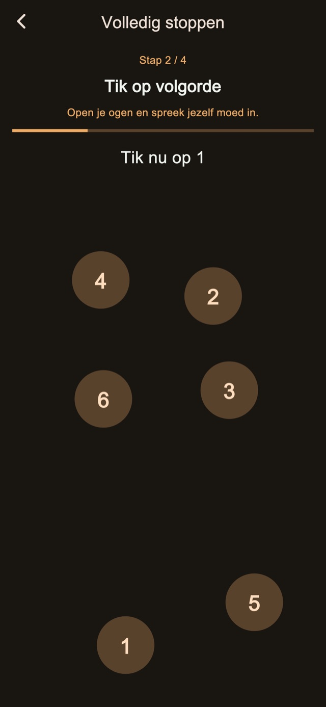
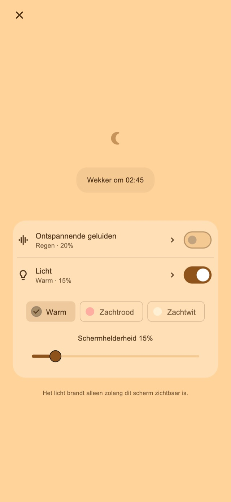

Ontspannende geluiden
Luister naar regen, golven of witte ruis. Geluid start alleen als je het aanzet en wordt voor het eerste alarm zachtjes uitgezet.
Trilwekker voor dutjes en na het naar bed brengen van je kind
Voor wie een dutje verslaapt of zelf in slaap valt bij het naar bed brengen.
01Trilpatronen
Wisselende lengtes en ritmes voelen anders dan je dagelijkse meldingen. Dat ongewone gevoel is bedoeld om je het alarm te laten opmerken en wakker te helpen worden.
Korte pulsen, lange pulsen en snelle reeksen. Kies uit vier basismodi: willekeurig, meldingsstijl, vooral lang of vooral kort. Variaties in duur en tussenpozen zorgen voor een ander ritme. Probeer ze voordat je een alarm instelt.
Trilpatronen
02Meerdere meldingen
Stop alleen de huidige melding om de volgende te behouden, of beëindig de reeks om de rest te annuleren.
Het aantal en het interval opslaan is een Premium-functie.
Meerdere meldingen
Beëindig als je opstaat
03Taken om te stoppen
Rekenen, cijfers op volgorde aantikken, vasthouden en herhaald tikken begeleiden stoppen en sluimeren. De standaardstappen zijn inbegrepen. Stappen bewerken en combineren kan met Premium.

Nachtscherm
Pas de helderheid en klokweergave aan. Je kunt het beeld na een tijdje zonder bediening verbergen. Tik om de klok en knoppen opnieuw te tonen.
Kies een duur, bijvoorbeeld 30 minuten, of een tijd om op te staan.
Houd het nachtscherm open. Zet geluid of licht aan als je dat wilt.
Voltooi de stopstappen en beëindig de reeks wanneer je opstaat.
Ontspannende geluiden en licht
Voor een dutje of het naar bed brengen van je kind. Zet ze op het nachtscherm aan wanneer je ze nodig hebt.
Luister naar regen, golven of witte ruis. Geluid start alleen als je het aanzet en wordt voor het eerste alarm zachtjes uitgezet.
Kies warm, zachtrood of zachtwit licht en stel de helderheid in.
Gratis basisfuncties

Gratis / Premium
Vier trilmodi, standaard stoppen en sluimeren, het nachtscherm, geluiden en licht zijn inbegrepen. Sommige schermen tonen advertenties.
| Functie | Gratis | Premium |
|---|---|---|
| Trilpatronen | ✓ | ✓ |
| Meerdere meldingen | Standaard | Aanpasbaar |
| Taken om te stoppen | Standaard | Aanpasbaar |
| Nachtscherm / Ontspannende geluiden / Licht | ✓ | ✓ |
| Maak en bewerk je eigen trilpatronen. | — | ✓ |
| Verwijder alle advertenties. | — | ✓ |
Kies een maandabonnement of een eenmalige aankoop. Het maandabonnement wordt automatisch verlengd en is te beheren of op te zeggen via je winkelaccount. Bekijk de prijzen en voorwaarden voor aankoop.
Veelgestelde vragen
Houd na het instellen het nachtscherm open om de eigen trilpatronen van de app te gebruiken. Vergrendel je met de zijknop of wissel je van app, dan neemt iOS de trilling over en gelden je eigen patroon en sterkte niet. Controleer de toestemmingen en trilinstellingen en test de werking voor gebruik.
Luister naar regen, golven of witte ruis. Geluid start alleen als je het aanzet en wordt voor het eerste alarm zachtjes uitgezet. Kies warm, zachtrood of zachtwit licht en stel de helderheid in.
Vier trilmodi, standaard stoppen en sluimeren, het nachtscherm, geluiden en licht zijn inbegrepen. Sommige schermen tonen advertenties. Verwijder alle advertenties. Wijzig het aantal meldingen en de tussenpozen. Bewerk stop- en sluimerstappen. Maak en bewerk je eigen trilpatronen. Kies een maandabonnement of een eenmalige aankoop. Het maandabonnement wordt automatisch verlengd en is te beheren of op te zeggen via je winkelaccount. Bekijk de prijzen en voorwaarden voor aankoop.
Downloaden
Trilwekker voor dutjes en na het naar bed brengen van je kind
Gratis basisfuncties
iPhone: iOS 26.1+ / Android: 8.0+